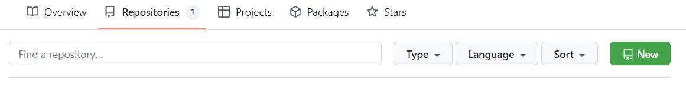
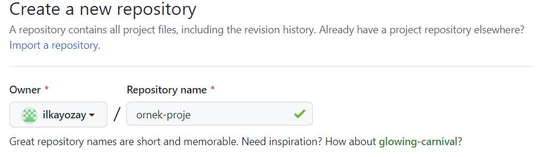
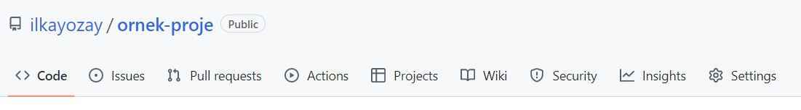
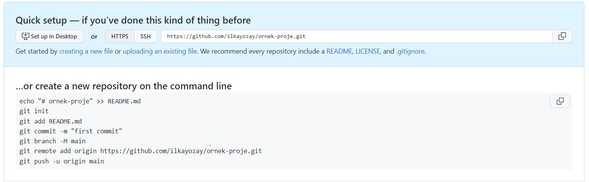
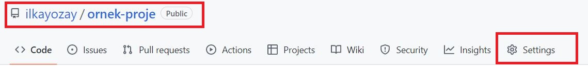
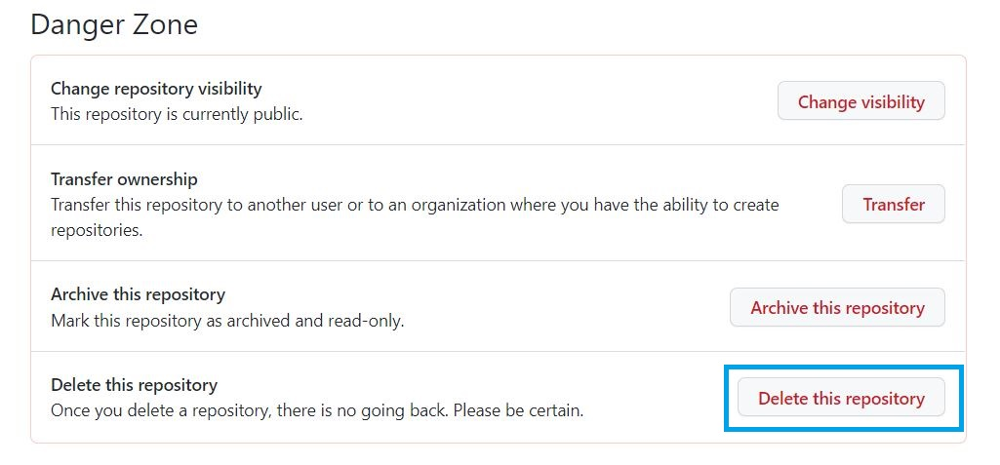

Bu yazıda Windows'da bilgisayarımızdaki bir projenin git ile nasıl Github'a aktarılacağının anlatacağım. Ancak bilgisayar da "git" uygulamasının kurulduğunu ve GitHub'da bir hesabınızın olduğunu varsayıyorum. Eğer Github hesabınız yoksa, GitHub'ın web sitesinden ücretsiz bir hesap oluşturabilirsiniz. Ayrıca git kurulumunu https://git-scm.com/downloads adresinden yapabilirsiniz.
Git ile ilgili işlemleri Git Bash konsolundan yada "cmd" ile açılan Komut İstemi (Command Prompt) ekranından yapabiliriz.
-
GIT konfigürasyon ayarlarını görnek için :
git config --list --show-originÖrneğin, çıktı şu şekilde olabilir:
file:/c/ProgramData/Git/config core.autocrlf=true file:/c/ProgramData/Git/config http.sslbackend=openssl file:/c/Users/username/.gitconfig user.name=User Name file:/c/Users/username/.gitconfig user.email=User.Name@gmail.comBu çıktıda, user.name ayarı C:\Users\username\.gitconfig dosyasından okunmuştur, core.autocrlf ayarı ise C:\ProgramData\Git\config dosyasından okunmuştur.
C:\ProgramData\Git\etc\gitconfig dosyası, sistem-seviyesi git ayarlarının saklandığı bir dosyadır. Bu dosya, tüm kullanıcılar tarafından paylaşılan ve tüm projelerde kullanılacak olan ayarları içerir.
Genellikle, bu dosya, bir sistem yöneticisi tarafından oluşturulur ve değiştirilir. Örneğin, bir sistem yöneticisi, tüm kullanıcıların aynı dil ayarını kullanmasını sağlamak için C:\ProgramData\Git\etc\gitconfig dosyasında i18n.commitencoding ayarını değiştirebilir.
Eğer sistem-seviyesi git ayarlarını değiştirmek istiyorsanız, C:\ProgramData\Git\etc\gitconfig dosyasını düzenleyebilirsiniz. Ancak, bu dosyayı değiştirirken dikkatli olmanız gerekiyor, çünkü bu dosya tüm kullanıcılar ve tüm projeler için geçerlidir ve yanlış bir değişiklik yaparsanız, tüm kullanıcılar ve projeler etkilenebilir. Eğer bu dosyayı değiştirecekseniz öncesinde bir yedek almakta fayda vardır.
Git içinde farklı yerde konfigürasyon mevcuttur. "Tüm userlar için konfigürasyon" , "sadece ilgii user için GLOBAL seviyede konfigürasyona" ve son olarak "proje klasörü içerisinde konfigürasyon".
Proje klasörü içerinden git config --list --show-origin komutu çağrılırsa, proje için örneğin çıktı şu şekilde olabilir:
file:.git/config core.repositoryformatversion=0 file:.git/config core.filemode=false file:.git/config core.bare=false file:.git/config core.logallrefupdates=true file:.git/config core.symlinks=false file:.git/config core.ignorecase=true :İlgili ekrandan çıkıp command prompt'a dönmek için "q" ya basılmalıdır.
-
Sadece user bazında "GLOBAL" git ayarlarını görmek için :
git config --list --show-origin | findstr "USERNAME/.gitconfig" -
Proje klasörü içerisinde değilde sadece İlgili user için "GLOBAL" seviyede git ayarlarını değiştirmek için :
git config --global user.name "example" git config --global user.email "email@example.com" -
Komut İstemi ekranındayken Example_Project klasörü yaratılır
md Example_Project"cd Example_Project" denilip klasör içine girdikten sonra bir python dosyası yaratılır
echo print ("hello wordl") > hello.py -
Daha sonra, klasör içinde bulunan dosyaları Git ile izleyebilmek için, klasörün içinden git init komutu çalıştırılır. Bu komut, klasörü bir Git depo (repository) haline getirir.
Bu komutu çalıştırıldığında, o klasör içinde bir ".git" adlı gizli bir klasör oluşturulur. Bu klasör, o klasör içindeki değişikliklerin takip edilebilmesi için gerekli olan dosyaları içerir. Bu dosyalar, git log dosyası, git config dosyası gibi dosyalardır. Bu dosyalar sayesinde, o klasör içinde yapılan değişikliklerin tarihçesi tutulur ve değişikliklerin yönetimi yapılabilir.
git initInitialized empty Git repository in D:/Workspace/GitHub/Example_Project/.git/ -
Daha sonra, git add . komutu çalıştırılarak tüm dosyalar Git'e eklenir. Bu komut, klasördeki tüm dosyaların Git tarafından izlemeye alınmasını sağlar.
git add . -
Devamında ise, git commit -m "initial commit" komutu çalıştırılarak yapılan işlemlerin onayı sağlanır. "-m" den sonra gelen açıklamada yapılan değişiklikler anlatılır. "initial commit yada ilk commit" gibi bir açıklama ile esasında projenin ilk halindeki tüm dosyaların bir ilk sürümünü oluşturduğumuzu beyan ediyoruz.
git commit -m "initial commit"[master (root-commit) 228967a] initial commit 1 file changed, 1 insertion(+) create mode 100644 hello.py -
Github a login olduktan sonra orada bir repository yaratmamız gerekiyor
 -
New tuşuna bastıktan sonra repository'e bir ad vermemiz gerekli. Buradaki isim bilgisayardaki klasördeki isimle aynı olmak zorunda değil.
 -
Diğer tüm ayarlar olduğu gibi bırakılıp en altta yer alan "Create Repository" tuşuna basılınca repository yaratılmış olacaktır.
  -
Github'da repository yaratarak aslında bilgisayardaki projenin gönderileceği adresi belirlemiş olduk. Bu aşamada gönderimi yapabiliriz ancak isteğe göre bir adım daha olabilir. Şöyleki github bize aşağıdaki gibi bir komut öneriyor. Bu komut mevcut çalışılan "master" branch'in adını "main" olarak değiştirir. Bu değişiklik, Git'de repository'lerin ana branch'inin "master" olmak yerine "main" olmasını sağlar. Bu, Git'in kökenlerine dayanan bir karar olarak kabul edilir ve "main" branch'inin daha anlaşılır bir ad olmasını amaçlar.
git branch -M main -
Aşağıdaki komut ile projemizi Github'daki repository'e adreslemiş olacağız.
git remote add origin https://github.com/ilkayozay/ornek-proje.git -
Son komut ile projemizi artık Github'a yükleme talimatı vermiş oluyoruz ( Github'a "push" etmiş oluyoruz).
git push -u origin mainEnumerating objects: 3, done. Counting objects: 100% (3/3), done. Writing objects: 100% (3/3), 232 bytes | 77.00 KiB/s, done. Total 3 (delta 0), reused 0 (delta 0), pack-reused 0 To https://github.com/ilkayozay/ornek-proje.git * [new branch] main -> main Branch 'main' set up to track remote branch 'main' from 'origin'.Eğer "git branch -M main" komutu kullanılmaz ise varsayılan branch adı "master" kalacaktır. Bu nedenle branch adı değiştirilmemişse komut aşağıdaki gibi olmalıdır. Sondaki "master" a dikkat!
git push -u origin masterEnumerating objects: 3, done. Counting objects: 100% (3/3), done. Writing objects: 100% (3/3), 232 bytes | 77.00 KiB/s, done. Total 3 (delta 0), reused 0 (delta 0), pack-reused 0 To https://github.com/ilkayozay/ornek_proje.git * [new branch] master -> master Branch 'master' set up to track remote branch 'master' from 'origin'. -
Yaratmış olduğumuz repository silmek istersek bunun için setting menüsüne gidilir.
 -
Açılan ekranda en alt kısımda yer alan "Danger Zone" sekmesinde "Delete this repository" tuşuna basarak repository silinebilir. Repository'nin silinmesi önemli bir işlem olduğu için onay için Github şifresi sorulacaktır.

Yeni bir proje klasörü yaratıp bunu github'a yüklemek için sırasıyla şu komutlar uygulanmalıdır.
Toplu Halde Komutlar
git init
git add .
git commit -m "Yapılan değişikliklerin özeti"
git remote add origin https://github.com/githesap_adi/proje_repository.git
git push -u origin master
Klasör bir kere yüklendikten sonra, sonradan yapılan güncellemelerin <update> Github repo'ya atılması için sırasıyla "add" ,"commit" ve "push" yeterlidir.
Son Bir Not
GitHub üzerinde yayınladığınız projeler için "README.md" dosyası eklemek bir zorunluluk olmamakla birlikte eklenmesinin bir çok faydası vardır:
-
README dosyası, proje hakkında bilgi verir ve projenin amacını, kullanımını ve yükleme kurallarını açıklar. Bu sayede projeyi kullanan kişiler, projeyi anlamaya ve kullanmaya daha kolay başlayabilir.
-
Projenin daha profesyonel bir görünüm kazanmasına yardımcı olur.
-
README dosyası, projenin daha fazla kişi tarafından keşfedilmesine yardımcı olur.
README.md dosyası üretmek için doğrudan Github üzerinde de çalışmaya başlayabilirsiniz. Ancak bir tool kullanmak işi kolaylaştıracaktır. https://readme.so/editor bu konuda başarılı gözüküyor. Denemekte fayda var